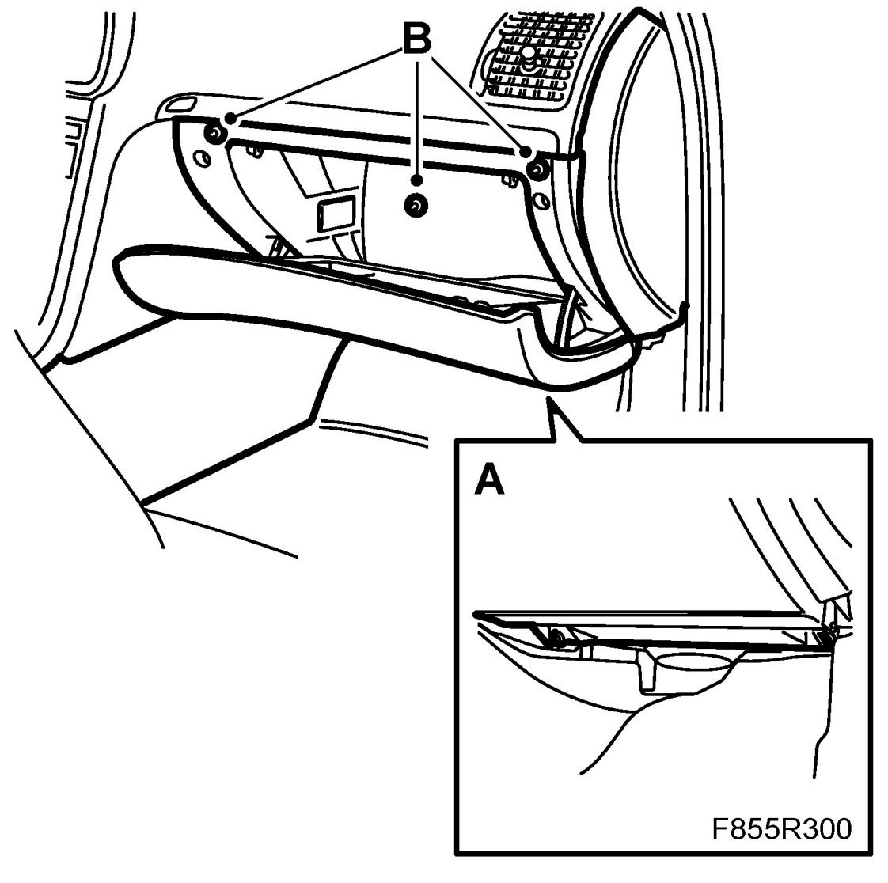
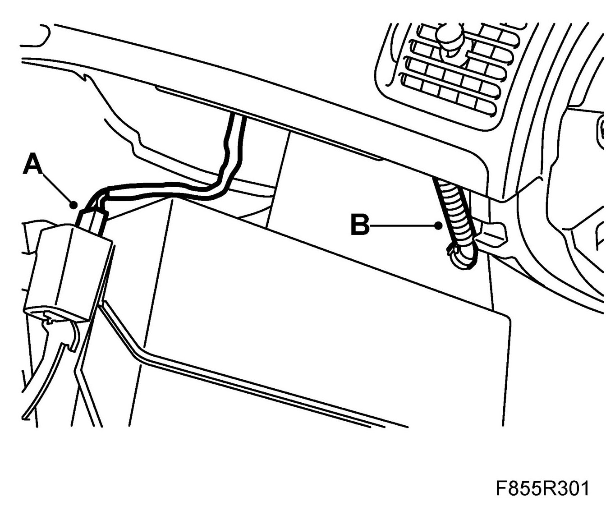
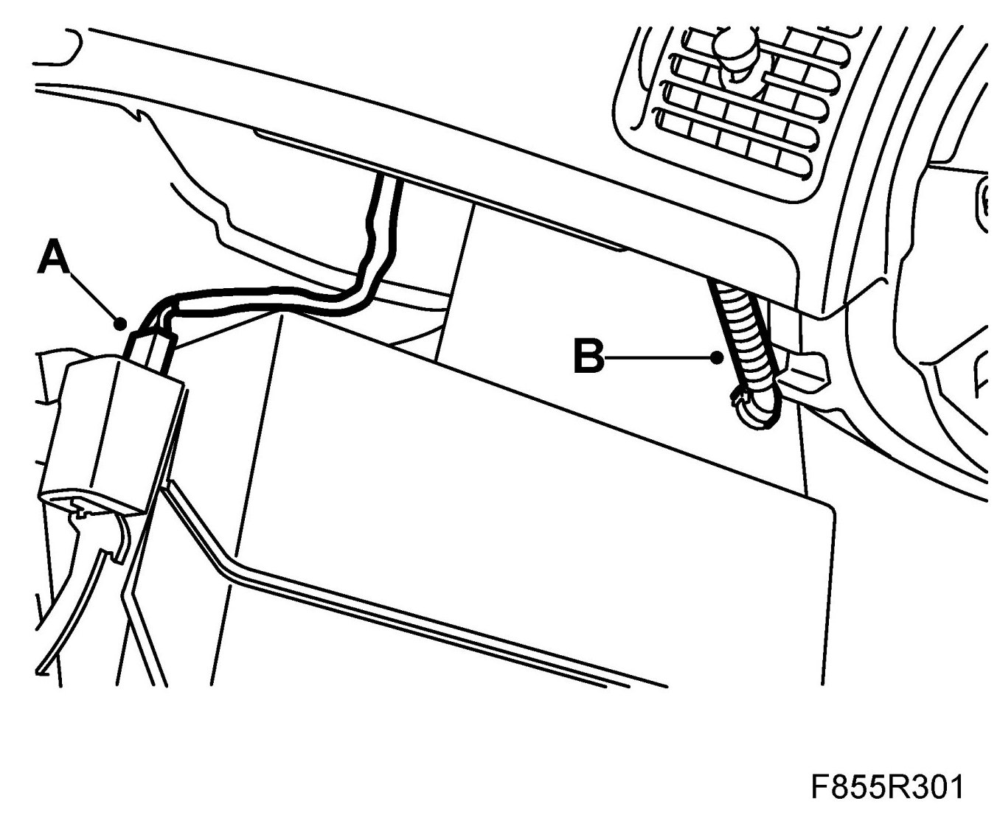
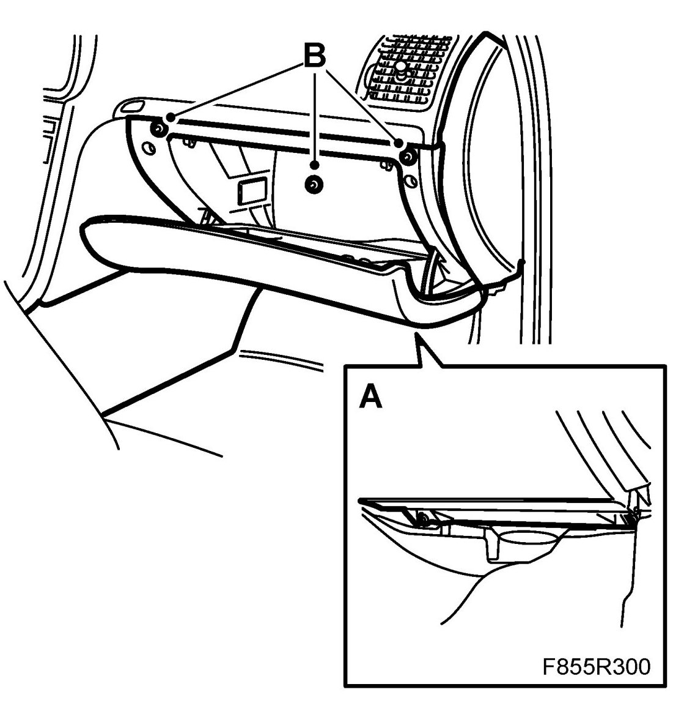

Glove Compartment: Service and Repair
Glove Box
To remove
1. Remove the lower dashboard bolts (A).

2. Open the cover to the glove box.
3. Remove the upper bolts (B) and the bolt from the inside of the glove box.
4. Lift out the glove box
5. Disconnect the glove box lighting cables (A).

6. Detach the cooling hose from the glove box (B).
To fit
1. Attach the cooling hose to the glove box (B).

2. Connect the glove box lighting cables (A).
3. Insert the glove box into position.
4. Fit the bolts inside the glove box and the upper bolts (B) in the glove box.

5. Close the cover to the glove box.
6. Fit the lower dashboard bolts (A).